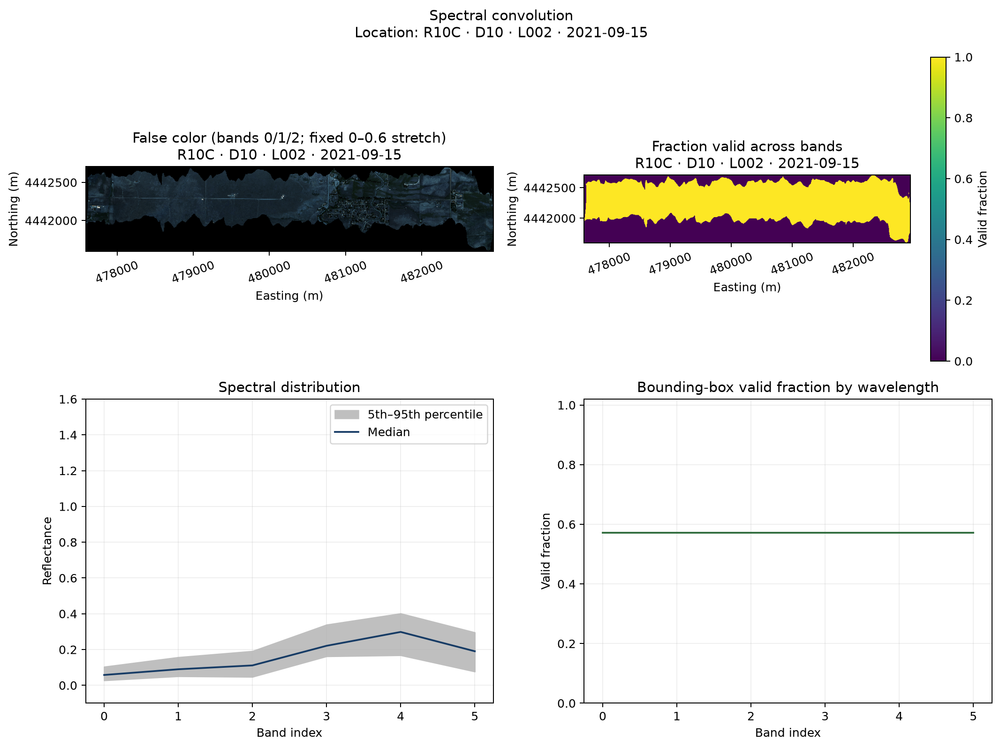
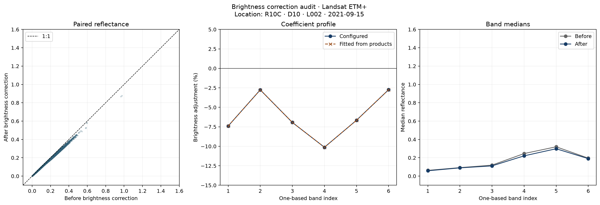
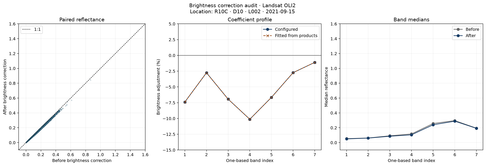
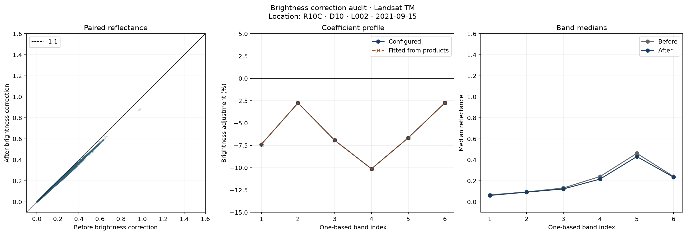

Schema 1.3 · Mode deep
PASS
The observed flight footprint occupies 0.571275 of the rectangular raster extent. Valid spectral support within that footprint is 1. Structural background remains recorded as no-data; QA did not crop, mask, or rewrite it.
A complete wavelength vector was unavailable, so retained bands could not be classified. No data were changed.
| Check | Status | Value | Warn / fail | Meaning | Reason |
|---|---|---|---|---|---|
| output_exists:NEON_D10_R10C_DP1_L002-1_20210915_directional_reflectance_landsat_etm+_envi.img | PASS | True | — / — | The canonical stage output exists on disk. | |
| output_exists:NEON_D10_R10C_DP1_L002-1_20210915_directional_reflectance_landsat_etm+_envi.hdr | PASS | True | — / — | The canonical stage output exists on disk. | |
| output_exists:NEON_D10_R10C_DP1_L002-1_20210915_directional_reflectance_landsat_oli2_envi.img | PASS | True | — / — | The canonical stage output exists on disk. | |
| output_exists:NEON_D10_R10C_DP1_L002-1_20210915_directional_reflectance_landsat_oli2_envi.hdr | PASS | True | — / — | The canonical stage output exists on disk. | |
| output_exists:NEON_D10_R10C_DP1_L002-1_20210915_directional_reflectance_landsat_oli_envi.img | PASS | True | — / — | The canonical stage output exists on disk. | |
| output_exists:NEON_D10_R10C_DP1_L002-1_20210915_directional_reflectance_landsat_oli_envi.hdr | PASS | True | — / — | The canonical stage output exists on disk. | |
| output_exists:NEON_D10_R10C_DP1_L002-1_20210915_directional_reflectance_landsat_tm_envi.img | PASS | True | — / — | The canonical stage output exists on disk. | |
| output_exists:NEON_D10_R10C_DP1_L002-1_20210915_directional_reflectance_landsat_tm_envi.hdr | PASS | True | — / — | The canonical stage output exists on disk. | |
| output_exists:NEON_D10_R10C_DP1_L002-1_20210915_directional_reflectance_micasense_envi.img | PASS | True | — / — | The canonical stage output exists on disk. | |
| output_exists:NEON_D10_R10C_DP1_L002-1_20210915_directional_reflectance_micasense_envi.hdr | PASS | True | — / — | The canonical stage output exists on disk. | |
| output_exists:NEON_D10_R10C_DP1_L002-1_20210915_directional_reflectance_micasense_to_match_oli_oli2_envi.img | PASS | True | — / — | The canonical stage output exists on disk. | |
| output_exists:NEON_D10_R10C_DP1_L002-1_20210915_directional_reflectance_micasense_to_match_oli_oli2_envi.hdr | PASS | True | — / — | The canonical stage output exists on disk. | |
| output_exists:NEON_D10_R10C_DP1_L002-1_20210915_directional_reflectance_micasense_to_match_tm_etm+_envi.img | PASS | True | — / — | The canonical stage output exists on disk. | |
| output_exists:NEON_D10_R10C_DP1_L002-1_20210915_directional_reflectance_micasense_to_match_tm_etm+_envi.hdr | PASS | True | — / — | The canonical stage output exists on disk. | |
| within_footprint_valid_reflectance_fraction | PASS | 1 fraction | 0.9 / 0.7 | Valid spectral support should remain high inside the observed flight footprint; structural background outside it is reported separately. | |
| negative_reflectance_fraction | PASS | 0 fraction | 0.01 / 0.05 | Large negative fractions may indicate correction or scaling artifacts. | |
| usable_band_reflectance_above_1_2_fraction | NOT EVALUATED | — fraction | 0.01 / 0.05 | Unexpected values above 1.2 are evaluated on wavelengths not already labeled as known poor-quality regions; the all-band fraction remains reported. | Metric could not be computed. |
| known_bad_spectral_bands_retained | NOT EVALUATED | — | — / — | Known poor-quality wavelength regions require a complete wavelength vector. | The ENVI header did not provide one wavelength for every band; no data were changed. |
| brightness_coefficient_application:Landsat ETM+ | PASS | 2.625e-08 absolute gain | — / 0.0001 | The fitted before/after gain must reproduce the configured brightness coefficient in the persisted product. | |
| brightness_coefficient_application:Landsat OLI2 | PASS | 2.67092e-08 absolute gain | — / 0.0001 | The fitted before/after gain must reproduce the configured brightness coefficient in the persisted product. | |
| brightness_coefficient_application:Landsat OLI | PASS | 2.76194e-08 absolute gain | — / 0.0001 | The fitted before/after gain must reproduce the configured brightness coefficient in the persisted product. | |
| brightness_coefficient_application:Landsat TM | PASS | 2.61431e-08 absolute gain | — / 0.0001 | The fitted before/after gain must reproduce the configured brightness coefficient in the persisted product. |




{
"bandwise": [
{
"band_index": 0,
"data_retained": true,
"median": 0.057927221059799194,
"negative_fraction": 0.0,
"overbright_fraction": 1.4301241347748985e-05,
"q05": 0.027638709172606468,
"q95": 0.10355009138584136,
"quality_label": "unclassified_retained",
"quality_reason": null,
"valid_fraction": 0.5712745098039216,
"wavelength_nm": null
},
{
"band_index": 1,
"data_retained": true,
"median": 0.08973865211009979,
"negative_fraction": 0.0,
"overbright_fraction": 1.4301241347748985e-05,
"q05": 0.05059424042701721,
"q95": 0.15689946115016934,
"quality_label": "unclassified_retained",
"quality_reason": null,
"valid_fraction": 0.5712745098039216,
"wavelength_nm": null
},
{
"band_index": 2,
"data_retained": true,
"median": 0.11124220490455627,
"negative_fraction": 0.0,
"overbright_fraction": 1.4301241347748985e-05,
"q05": 0.047206492908298966,
"q95": 0.19099324494600295,
"quality_label": "unclassified_retained",
"quality_reason": null,
"valid_fraction": 0.5712745098039216,
"wavelength_nm": null
},
{
"band_index": 3,
"data_retained": true,
"median": 0.2208998128771782,
"negative_fraction": 0.0,
"overbright_fraction": 1.4301241347748985e-05,
"q05": 0.1620721086859703,
"q95": 0.3386655777692794,
"quality_label": "unclassified_retained",
"quality_reason": null,
"valid_fraction": 0.5712745098039216,
"wavelength_nm": null
},
{
"band_index": 4,
"data_retained": true,
"median": 0.29836229979991913,
"negative_fraction": 0.0,
"overbright_fraction": 1.4301241347748985e-05,
"q05": 0.16809902489185333,
"q95": 0.4015253990888593,
"quality_label": "unclassified_retained",
"quality_reason": null,
"valid_fraction": 0.5712745098039216,
"wavelength_nm": null
},
{
"band_index": 5,
"data_retained": true,
"median": 0.19050442427396774,
"negative_fraction": 0.0,
"overbright_fraction": 1.4301241347748985e-05,
"q05": 0.07696315944194794,
"q95": 0.29556624293327327,
"quality_label": "unclassified_retained",
"quality_reason": null,
"valid_fraction": 0.5712745098039216,
"wavelength_nm": null
}
],
"brightness_correction": {
"audit_mode": "persisted_before_after_products_no_refit_or_modification",
"products": [
{
"after_path": "/private/tmp/spectralbridge-real-qa-fixed/NEON_D10_R10C_DP1_L002-1_20210915_directional_reflectance/NEON_D10_R10C_DP1_L002-1_20210915_directional_reflectance_landsat_etm+_envi.img",
"bands": [
{
"after_median": 0.057927221059799194,
"after_q05": 0.027638709172606468,
"after_q95": 0.10355009138584136,
"band_index": 1,
"before_median": 0.06255365163087845,
"before_q05": 0.029846110474318267,
"before_q95": 0.11182024218142031,
"expected_gain": 0.9260405899999999,
"expected_percent": -7.395941,
"fitted_gain": 0.9260405897347768,
"fitted_intercept": -8.4334127460779e-12,
"gain_error": -2.6522317675414797e-10,
"n": 69924,
"r_squared": 0.999999999999989
},
{
"after_median": 0.08973865211009979,
"after_q05": 0.05059424042701721,
"after_q95": 0.15689946115016934,
"band_index": 2,
"before_median": 0.09228022769093513,
"before_q05": 0.05202717054635286,
"before_q95": 0.16134316548705097,
"expected_gain": 0.97245804,
"expected_percent": -2.754196,
"fitted_gain": 0.9724580640886176,
"fitted_intercept": 4.875382260487214e-11,
"gain_error": 2.408861754510383e-08,
"n": 69924,
"r_squared": 0.9999999999999863
},
{
"after_median": 0.11124220490455627,
"after_q05": 0.047206492908298966,
"after_q95": 0.19099324494600295,
"band_index": 3,
"before_median": 0.11953402683138847,
"before_q05": 0.0507251912727952,
"before_q95": 0.20522959008812902,
"expected_gain": 0.9306321200000001,
"expected_percent": -6.936788,
"fitted_gain": 0.9306321148394882,
"fitted_intercept": -5.084227140783806e-11,
"gain_error": -5.160511906687759e-09,
"n": 69924,
"r_squared": 0.999999999999986
},
{
"after_median": 0.2208998128771782,
"after_q05": 0.1620721086859703,
"after_q95": 0.3386655777692794,
"band_index": 4,
"before_median": 0.24577981978654861,
"before_q05": 0.18032633736729622,
"before_q95": 0.3768095821142196,
"expected_gain": 0.89877115,
"expected_percent": -10.122885,
"fitted_gain": 0.8987711660696763,
"fitted_intercept": 1.4490990441482657e-10,
"gain_error": 1.6069676367358454e-08,
"n": 69924,
"r_squared": 0.999999999999969
},
{
"after_median": 0.29836229979991913,
"after_q05": 0.16809902489185333,
"after_q95": 0.4015253990888593,
"band_index": 5,
"before_median": 0.31962376832962036,
"before_q05": 0.18007785230875015,
"before_q95": 0.43013830929994556,
"expected_gain": 0.9334797,
"expected_percent": -6.65203,
"fitted_gain": 0.9334797262500283,
"fitted_intercept": 5.950541419400618e-11,
"gain_error": 2.6250028262175817e-08,
"n": 69924,
"r_squared": 0.9999999999999636
},
{
"after_median": 0.19050442427396774,
"after_q05": 0.07696315944194794,
"after_q95": 0.29556624293327327,
"band_index": 6,
"before_median": 0.19586237519979477,
"before_q05": 0.07912775725126267,
"before_q95": 0.30387909263372415,
"expected_gain": 0.97264428,
"expected_percent": -2.735572,
"fitted_gain": 0.9726442701548501,
"fitted_intercept": -6.602593708406674e-11,
"gain_error": -9.84514991753116e-09,
"n": 69924,
"r_squared": 0.9999999999999817
}
],
"bands_evaluated": 6,
"bands_with_expected_coefficients": 6,
"before_path": "/private/tmp/spectralbridge-real-qa-fixed/NEON_D10_R10C_DP1_L002-1_20210915_directional_reflectance/NEON_D10_R10C_DP1_L002-1_20210915_directional_reflectance_landsat_etm+_undarkened_envi.img",
"coefficient_source": "landsat_to_micasense.json",
"data_modified": false,
"maximum_absolute_gain_error": 2.6250028262175817e-08,
"method": "bandwise_ordinary_least_squares_after_on_before",
"product": "Landsat ETM+"
},
{
"after_path": "/private/tmp/spectralbridge-real-qa-fixed/NEON_D10_R10C_DP1_L002-1_20210915_directional_reflectance/NEON_D10_R10C_DP1_L002-1_20210915_directional_reflectance_landsat_oli2_envi.img",
"bands": [
{
"after_median": 0.04946879297494888,
"after_q05": 0.02386920154094696,
"after_q95": 0.08999374546110628,
"band_index": 1,
"before_median": 0.0534196812659502,
"before_q05": 0.025775546673685312,
"before_q95": 0.09718121439218518,
"expected_gain": 0.9260405899999999,
"expected_percent": -7.395941,
"fitted_gain": 0.9260405911389904,
"fitted_intercept": -8.601171498977933e-11,
"gain_error": 1.1389904575054288e-09,
"n": 69924,
"r_squared": 0.9999999999999901
},
{
"after_median": 0.06050349958240986,
"after_q05": 0.028494005836546422,
"after_q95": 0.10822983048856255,
"band_index": 2,
"before_median": 0.06221707910299301,
"before_q05": 0.029301011934876442,
"before_q95": 0.11129511445760723,
"expected_gain": 0.97245804,
"expected_percent": -2.754196,
"fitted_gain": 0.97245806670919,
"fitted_intercept": -1.5252477205928884e-10,
"gain_error": 2.6709189970830494e-08,
"n": 69924,
"r_squared": 0.9999999999999889
},
{
"after_median": 0.0853499136865139,
"after_q05": 0.04974449276924133,
"after_q95": 0.14886664971709238,
"band_index": 3,
"before_median": 0.09171176701784134,
"before_q05": 0.05345237031579018,
"before_q95": 0.1599629439413546,
"expected_gain": 0.9306321200000001,
"expected_percent": -6.936788,
"fitted_gain": 0.9306321149962379,
"fitted_intercept": -7.032115929746422e-11,
"gain_error": -5.003762182376192e-09,
"n": 69924,
"r_squared": 0.9999999999999857
},
{
"after_median": 0.10480321571230888,
"after_q05": 0.03992441389709711,
"after_q95": 0.182712210714817,
"band_index": 4,
"before_median": 0.11660723388195038,
"before_q05": 0.04442111309617758,
"before_q95": 0.20329114049673075,
"expected_gain": 0.89877115,
"expected_percent": -10.122885,
"fitted_gain": 0.8987711651926334,
"fitted_intercept": 1.6758066140086076e-10,
"gain_error": 1.519263348459532e-08,
"n": 69924,
"r_squared": 0.999999999999987
},
{
"after_median": 0.24019581079483032,
"after_q05": 0.1774715192615986,
"after_q95": 0.3683505058288574,
"band_index": 5,
"before_median": 0.2573122978210449,
"before_q05": 0.19011823758482932,
"before_q95": 0.39459936469793316,
"expected_gain": 0.9334797,
"expected_percent": -6.65203,
"fitted_gain": 0.9334797261436472,
"fitted_intercept": -3.909903442838577e-11,
"gain_error": 2.6143647136045445e-08,
"n": 69924,
"r_squared": 0.9999999999999677
},
{
"after_median": 0.28819048404693604,
"after_q05": 0.15629701912403107,
"after_q95": 0.3941335693001747,
"band_index": 6,
"before_median": 0.2962958812713623,
"before_q05": 0.16069290041923523,
"before_q95": 0.40521861910820006,
"expected_gain": 0.97264428,
"expected_percent": -2.735572,
"fitted_gain": 0.9726442693869817,
"fitted_intercept": -2.856595441139275e-11,
"gain_error": -1.0613018353033965e-08,
"n": 69924,
"r_squared": 0.9999999999999659
},
{
"after_median": 0.1920100748538971,
"after_q05": 0.0773972287774086,
"after_q95": 0.2979646086692809,
"band_index": 7,
"before_median": 0.19415926188230515,
"before_q05": 0.07826354503631591,
"before_q95": 0.3012997344136237,
"expected_gain": 0.9889308,
"expected_percent": -1.10692,
"fitted_gain": 0.9889308222192218,
"fitted_intercept": -7.29858746001996e-11,
"gain_error": 2.2219221795793942e-08,
"n": 69924,
"r_squared": 0.9999999999999819
}
],
"bands_evaluated": 7,
"bands_with_expected_coefficients": 7,
"before_path": "/private/tmp/spectralbridge-real-qa-fixed/NEON_D10_R10C_DP1_L002-1_20210915_directional_reflectance/NEON_D10_R10C_DP1_L002-1_20210915_directional_reflectance_landsat_oli2_undarkened_envi.img",
"coefficient_source": "landsat_to_micasense.json",
"data_modified": false,
"maximum_absolute_gain_error": 2.6709189970830494e-08,
"method": "bandwise_ordinary_least_squares_after_on_before",
"product": "Landsat OLI2"
},
{
"after_path": "/private/tmp/spectralbridge-real-qa-fixed/NEON_D10_R10C_DP1_L002-1_20210915_directional_reflectance/NEON_D10_R10C_DP1_L002-1_20210915_directional_reflectance_landsat_oli_envi.img",
"bands": [
{
"after_median": 0.04948597401380539,
"after_q05": 0.023869025241583585,
"after_q95": 0.09003345817327497,
"band_index": 1,
"before_median": 0.05343823693692684,
"before_q05": 0.025775356404483318,
"before_q95": 0.09722409546375273,
"expected_gain": 0.9260405899999999,
"expected_percent": -7.395941,
"fitted_gain": 0.9260405917460917,
"fitted_intercept": -1.1779852849664565e-10,
"gain_error": 1.7460917156597588e-09,
"n": 69924,
"r_squared": 0.99999999999999
},
{
"after_median": 0.060537064447999,
"after_q05": 0.028524682950228454,
"after_q95": 0.10827271789312362,
"band_index": 2,
"before_median": 0.06225159391760826,
"before_q05": 0.029332559648901226,
"before_q95": 0.11133921816945076,
"expected_gain": 0.97245804,
"expected_percent": -2.754196,
"fitted_gain": 0.9724580676194239,
"fitted_intercept": -1.9718228865104391e-10,
"gain_error": 2.7619423859093217e-08,
"n": 69924,
"r_squared": 0.9999999999999889
},
{
"after_median": 0.08545338734984398,
"after_q05": 0.04973950311541557,
"after_q95": 0.14906941875815383,
"band_index": 3,
"before_median": 0.09182295203208923,
"before_q05": 0.05344700645655394,
"before_q95": 0.1601808212697505,
"expected_gain": 0.9306321200000001,
"expected_percent": -6.936788,
"fitted_gain": 0.9306321146973696,
"fitted_intercept": -3.242957462040994e-11,
"gain_error": -5.302630445847001e-09,
"n": 69924,
"r_squared": 0.9999999999999859
},
{
"after_median": 0.1048731580376625,
"after_q05": 0.03994075730443001,
"after_q95": 0.18281277567148205,
"band_index": 4,
"before_median": 0.11668504402041435,
"before_q05": 0.044439294189214704,
"before_q95": 0.20340303406119342,
"expected_gain": 0.89877115,
"expected_percent": -10.122885,
"fitted_gain": 0.8987711675337053,
"fitted_intercept": -6.73586104647721e-11,
"gain_error": 1.7533705376493458e-08,
"n": 69924,
"r_squared": 0.999999999999987
},
{
"after_median": 0.24023620784282684,
"after_q05": 0.17750315815210344,
"after_q95": 0.368405058979988,
"band_index": 5,
"before_median": 0.25735555589199066,
"before_q05": 0.1901521287858486,
"before_q95": 0.39465780258178695,
"expected_gain": 0.9334797,
"expected_percent": -6.65203,
"fitted_gain": 0.9334797261097313,
"fitted_intercept": 7.927719142651768e-11,
"gain_error": 2.6109731265933078e-08,
"n": 69924,
"r_squared": 0.9999999999999676
},
{
"after_median": 0.2884595990180969,
"after_q05": 0.15649588108062745,
"after_q95": 0.394325053691864,
"band_index": 6,
"before_median": 0.29657256603240967,
"before_q05": 0.16089735627174379,
"before_q95": 0.40541550219058986,
"expected_gain": 0.97264428,
"expected_percent": -2.735572,
"fitted_gain": 0.9726442694595445,
"fitted_intercept": 6.169767749020407e-11,
"gain_error": -1.0540455508412094e-08,
"n": 69924,
"r_squared": 0.9999999999999656
},
{
"after_median": 0.1920003443956375,
"after_q05": 0.07749169245362282,
"after_q95": 0.2978706717491149,
"band_index": 7,
"before_median": 0.194149412214756,
"before_q05": 0.0783590629696846,
"before_q95": 0.3012047633528709,
"expected_gain": 0.9889308,
"expected_percent": -1.10692,
"fitted_gain": 0.9889308219781228,
"fitted_intercept": -1.3343025440867872e-10,
"gain_error": 2.1978122766164176e-08,
"n": 69924,
"r_squared": 0.9999999999999819
}
],
"bands_evaluated": 7,
"bands_with_expected_coefficients": 7,
"before_path": "/private/tmp/spectralbridge-real-qa-fixed/NEON_D10_R10C_DP1_L002-1_20210915_directional_reflectance/NEON_D10_R10C_DP1_L002-1_20210915_directional_reflectance_landsat_oli_undarkened_envi.img",
"coefficient_source": "landsat_to_micasense.json",
"data_modified": false,
"maximum_absolute_gain_error": 2.7619423859093217e-08,
"method": "bandwise_ordinary_least_squares_after_on_before",
"product": "Landsat OLI"
},
{
"after_path": "/private/tmp/spectralbridge-real-qa-fixed/NEON_D10_R10C_DP1_L002-1_20210915_directional_reflectance/NEON_D10_R10C_DP1_L002-1_20210915_directional_reflectance_landsat_tm_envi.img",
"bands": [
{
"after_median": 0.06119275838136673,
"after_q05": 0.03181033916771412,
"after_q95": 0.10871308222413054,
"band_index": 1,
"before_median": 0.066079992800951,
"before_q05": 0.03435091339051723,
"before_q95": 0.11739558689296235,
"expected_gain": 0.9260405899999999,
"expected_percent": -7.395941,
"fitted_gain": 0.9260405906490782,
"fitted_intercept": -5.601319916823255e-11,
"gain_error": 6.490782356038949e-10,
"n": 69924,
"r_squared": 0.999999999999988
},
{
"after_median": 0.09229138121008873,
"after_q05": 0.04983620084822178,
"after_q95": 0.16009065359830843,
"band_index": 2,
"before_median": 0.09490525722503662,
"before_q05": 0.051247659139335155,
"before_q95": 0.16462473347783077,
"expected_gain": 0.97245804,
"expected_percent": -2.754196,
"fitted_gain": 0.9724580652832464,
"fitted_intercept": -7.165889778286015e-11,
"gain_error": 2.528324638539914e-08,
"n": 69924,
"r_squared": 0.9999999999999861
},
{
"after_median": 0.12285489216446877,
"after_q05": 0.08092204593122006,
"after_q95": 0.19334041774272917,
"band_index": 3,
"before_median": 0.13201231509447098,
"before_q05": 0.08695385605096817,
"before_q95": 0.2077517233788967,
"expected_gain": 0.9306321200000001,
"expected_percent": -6.936788,
"fitted_gain": 0.9306321150572228,
"fitted_intercept": -7.445771072464905e-11,
"gain_error": -4.942777298566625e-09,
"n": 69924,
"r_squared": 0.9999999999999767
},
{
"after_median": 0.21686191111803055,
"after_q05": 0.16043522581458092,
"after_q95": 0.32010756731033313,
"band_index": 4,
"before_median": 0.24128711968660355,
"before_q05": 0.17850509136915207,
"before_q95": 0.35616135597228993,
"expected_gain": 0.89877115,
"expected_percent": -10.122885,
"fitted_gain": 0.8987711663366657,
"fitted_intercept": 1.2518848265282598e-10,
"gain_error": 1.6336665686900176e-08,
"n": 69924,
"r_squared": 0.9999999999999657
},
{
"after_median": 0.43102802336215973,
"after_q05": 0.2903324976563454,
"after_q95": 0.5373832643032073,
"band_index": 5,
"before_median": 0.4617433249950409,
"before_q05": 0.31102175563573836,
"before_q95": 0.5756774514913557,
"expected_gain": 0.9334797,
"expected_percent": -6.65203,
"fitted_gain": 0.9334797261431048,
"fitted_intercept": 6.735584279483368e-11,
"gain_error": 2.6143104792097915e-08,
"n": 69924,
"r_squared": 0.999999999999931
},
{
"after_median": 0.23508677631616592,
"after_q05": 0.11409905850887299,
"after_q95": 0.3428487583994863,
"band_index": 6,
"before_median": 0.24169861525297165,
"before_q05": 0.11730810813605785,
"before_q95": 0.3524914219975469,
"expected_gain": 0.97264428,
"expected_percent": -2.735572,
"fitted_gain": 0.9726442677397334,
"fitted_intercept": 3.962681833720456e-10,
"gain_error": -1.2260266579744439e-08,
"n": 69924,
"r_squared": 0.9999999999999727
}
],
"bands_evaluated": 6,
"bands_with_expected_coefficients": 6,
"before_path": "/private/tmp/spectralbridge-real-qa-fixed/NEON_D10_R10C_DP1_L002-1_20210915_directional_reflectance/NEON_D10_R10C_DP1_L002-1_20210915_directional_reflectance_landsat_tm_undarkened_envi.img",
"coefficient_source": "landsat_to_micasense.json",
"data_modified": false,
"maximum_absolute_gain_error": 2.6143104792097915e-08,
"method": "bandwise_ordinary_least_squares_after_on_before",
"product": "Landsat TM"
}
]
},
"plot_contract": {
"brdf_coefficient": [
-1.5,
1.5
],
"brightness_adjustment_percent": [
-15.0,
5.0
],
"correction_difference": [
-0.2,
0.2
],
"correction_difference_norm": "symmetric_log_linthresh_0.005",
"display_only": true,
"geometry_radians": [
-0.1,
6.383185307179586
],
"location_label": "R10C \u00b7 D10 \u00b7 L002 \u00b7 2021-09-15",
"negative_fraction": [
0.0,
0.055
],
"reflectance": [
-0.1,
1.6
],
"reflectance_map": [
0.0,
1.2
],
"rgb_reflectance": [
0.0,
0.6
],
"seam_score": [
0.0,
3.0
],
"spatial": {
"coordinate_system": "UTM zone 13 North",
"extent": [
477587.5,
482938.5,
4441592.5,
4442707.5
],
"mode": "projected_map_coordinates",
"x_label": "Easting (m)",
"y_label": "Northing (m)"
},
"valid_fraction": [
0.0,
1.02
],
"valid_map": [
0.0,
1.0
],
"values_outside_limits_retained_in_metrics": true,
"version": "1.1",
"wavelength_nm": [
350.0,
2600.0
]
},
"reflectance": {
"maximum": 1.455297589302063,
"minimum": 1.8910983001774184e-08,
"missing_fraction": 0.4287254901960784,
"n_total": 734400,
"n_valid": 419544,
"negative_fraction": 0.0,
"overbright_fraction": 1.4301241347748985e-05,
"q01": 0.01943302055820823,
"q05": 0.04309811759740115,
"q50": 0.1444500982761383,
"q95": 0.3377353295683859,
"q99": 0.4073419910669327,
"valid_fraction": 0.5712745098039216
},
"reflectance_scaling": {
"nodata_value": -9999.0,
"source": "primary_header",
"stored_value_divisor": 10000.0
},
"spatial_footprint": {
"bounding_box_footprint_fraction": 0.5712745098039216,
"bounding_box_pixels": 122400,
"data_modified": false,
"footprint_pixels": 69924,
"method": "any_band_finite_on_deterministic_sample",
"structural_background_fraction": 0.4287254901960784,
"within_footprint_cells": 419544,
"within_footprint_valid_cells": 419544,
"within_footprint_valid_fraction": 1.0
},
"spectral_quality": {
"all_band_overbright_fraction": 1.4301241347748985e-05,
"classification_available": false,
"classification_mode": "report_only_no_masking",
"data_modified": false,
"known_bad_band_count": null,
"known_bad_band_fraction": null,
"known_bad_band_indices": [],
"known_bad_band_overbright_fraction": null,
"known_bad_band_wavelengths_nm": [],
"known_bad_wavelength_ranges_nm": [
{
"maximum_nm": 400.0,
"minimum_nm": 300.0,
"reason": "spectral edge / low-signal region"
},
{
"maximum_nm": 1430.0,
"minimum_nm": 1337.0,
"reason": "strong atmospheric water-absorption region"
},
{
"maximum_nm": 1960.0,
"minimum_nm": 1800.0,
"reason": "strong atmospheric water-absorption region"
},
{
"maximum_nm": 2600.0,
"minimum_nm": 2450.0,
"reason": "spectral edge / low-signal region"
}
],
"usable_band_count": null,
"usable_band_overbright_fraction": null
}
}
{
"context_fingerprint": "19dec09d692e25b2386d5b9dd4148fd8409dbe446d8d3e23df7b11bfef87b0d3",
"deterministic": true,
"git_sha": "d88e8d0947718d1e33b534080c224b703987e536",
"package_version": "2.2.0",
"thresholds": {
"chunk_difference_tolerance": 1e-06,
"correction_abs_q99_fail": 0.5,
"correction_abs_q99_warn": 0.2,
"negative_fraction_fail": 0.05,
"negative_fraction_warn": 0.01,
"overbright_fraction_fail": 0.05,
"overbright_fraction_warn": 0.01,
"provisional": true,
"seam_score_fail": 2.5,
"seam_score_warn": 1.5,
"srf_coverage_fail": 0.9,
"srf_coverage_warn": 0.98,
"valid_fraction_fail": 0.7,
"valid_fraction_warn": 0.9
}
}